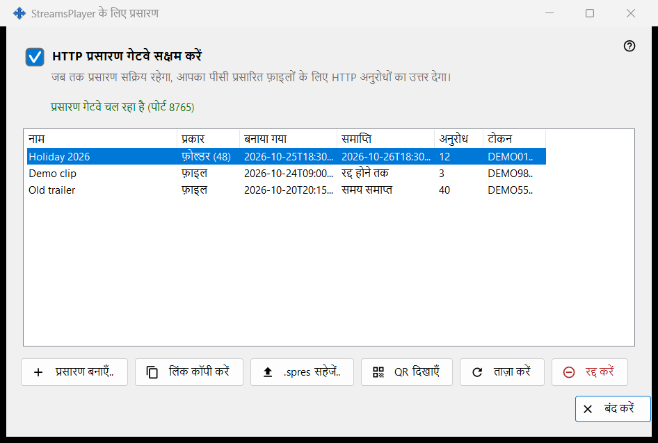
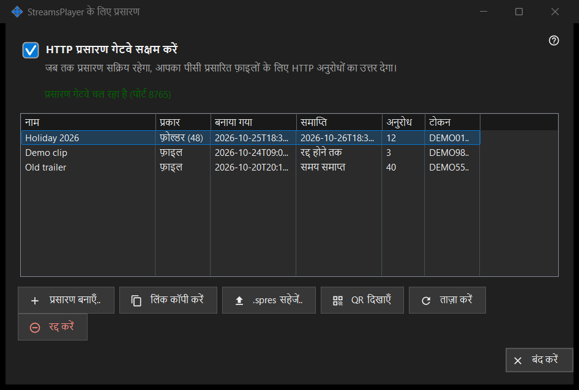

StreamsPlayer के लिए प्रसारण
यह किस लिए है
मीडिया फ़ाइलों और फ़ोल्डरों के उन HTTP प्रसारणों को प्रबंधित करती है जो यह पीसी StreamsPlayer ऐप को देता है। यह Share Manager की मुख्य विंडो के प्रसारण.. बटन या जोड़ें मेनू आइटम से खुलती है, जो तभी दिखते हैं जब साझा करने वाली सेवा प्रसारण का समर्थन बताती है। पथ के साथ किया गया लॉन्च इसे खोलकर सीधे उस पथ के लिए प्रसारण बनाएँ संवाद पर पहुँचा देता है।


इस क्रम में
- HTTP प्रसारण गेटवे सक्षम करें पर निशान लगाएँ, या सीधे प्रसारण बनाएँ, जिससे गेटवे चालू हो जाता है।
- प्रसारण बनाएँ.. दबाएँ, मीडिया फ़ाइल चुनें, शीर्षक, अवधि और इंटरनेट विकल्प तय करें, और प्रसारित करें दबाएँ।
- लिंक क्लिपबोर्ड पर कॉपी हो जाता है।
- कोई पंक्ति चुनें और प्रसारण को किसी डिवाइस को देने के लिए लिंक कॉपी करें, .spres सहेजें.. या QR दिखाएँ का उपयोग करें।
- जब प्रसारण की ज़रूरत न रहे, तो उस पर रद्द करें दबाएँ।
तत्व
गेटवे स्विच
चेकबॉक्स HTTP गेटवे को चालू या बंद करता है। उसके नीचे की पंक्ति में प्रसारण गेटवे बंद है या प्रसारण गेटवे चल रहा है (पोर्ट N) लिखा होता है। गेटवे चलने के दौरान यह पीसी प्रसारण फ़ाइलों के लिए HTTP अनुरोधों का उत्तर देता है। यदि गेटवे शुरू नहीं हो पाता (पोर्ट, फ़ायरवॉल), तो चेकबॉक्स अपनी असली स्थिति में लौट आता है और कारण उसके नीचे एक लाल पंक्ति में दिखता है; इनकार कभी संवाद नहीं खोलता।
प्रसारण सूची
कॉलम: नाम, प्रकार (फ़ाइल, या तत्वों की संख्या के साथ फ़ोल्डर), बनाया गया, समाप्ति (तारीख, रद्द होने तक या समय समाप्त), अनुरोध और टोकन, जिसके केवल पहले छह अक्षर दिखते हैं। सूची हर 5 सेकंड में खुद को दोबारा पढ़ती है। पंक्ति पर डबल क्लिक उसका लिंक कॉपी करता है।
प्रसारण बनाएँ..
मीडिया फ़ाइल माँगता है और प्रसारण बनाएँ संवाद खोलता है। उसे स्वीकार करने के बाद, ज़रूरत हो तो गेटवे चालू होता है, प्रसारण बनता है और उसका लिंक गोपनीयता चिह्नों के साथ क्लिपबोर्ड पर कॉपी हो जाता है; एक संदेश कॉपी की पुष्टि करता है।
ताज़ा करें और रद्द करें
ताज़ा करें केवल फ़ोल्डर प्रसारण के लिए उपलब्ध है और सेवा से उसे ताज़ा करने को कहता है; एक संदेश पुष्टि करता है। रद्द करें किसी भी पंक्ति पर काम करता है और पहले पूछता है: क्या प्रसारण X को रद्द करना चाहते हैं? लिंक तुरंत काम करना बंद कर देगा। रद्द किया हुआ प्रसारण वापस नहीं आ सकता; नया प्रसारण बनाएँ।
जब पृष्ठ बंद हो
यदि साझा करने वाली सेवा उत्तर नहीं देती या उसमें प्रसारण का समर्थन नहीं है, तो पृष्ठ अपनी जगह पर खुद को बंद कर लेता है और लाल पंक्ति कारण बताती है, उदाहरण के लिए कि प्रसारण सेवा का यह संस्करण पुराना है, या कि कार्रवाई पूरी नहीं हो सकी और ब्योरा लॉग में है।
प्रबंधक सेटिंग · SFTP साझाकरण सेटिंग · एक्सचेंज सर्वर सेटिंग